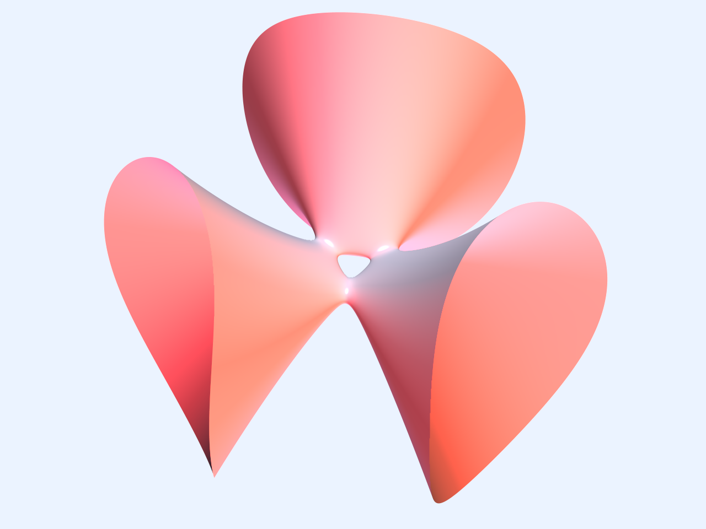

Math 433 - Introduction to differential geometry
Winter 2016
Lecture Meeting times: 11:00-12:00 MWF, East Hall 4088
Instructor: Eleonore Faber
Office: EH 1855
Office hours: Monday 2-4pm, Friday 2-3pm
Textbook: Differential Geometry of Curves and Surfaces by Manfredo P. Do Carmo
The syllabus for the course can be found HERE.
An errata for the textbook can be found HERE.
Some practice exercises for the final exam (April 26!) are HERE.
Review session for the final: Thursday April 21, 7-8pm, EH2866.
Problem sets will be posted below:
Homework 1 (due January 15)
Homework 2 (due January 29)
Homework 3 (due February 5)
Homework 4 (due February 19)
Homework 5 (due February 26)
Homework 6 (due March 11)
Homework 7 (due March 18)
Homework 8 (due April 1)
Homework 9 (due April 8)
Homework 10 (due April 15)
Old stuff
Some practice exercises for the first midterm exam (February 12) are HERE.
Some practice exercises for the second midterm exam (March 21) are HERE.
The first midterm exam (with solutions) is HERE.
The second midterm exam (with solutions) is HERE.
